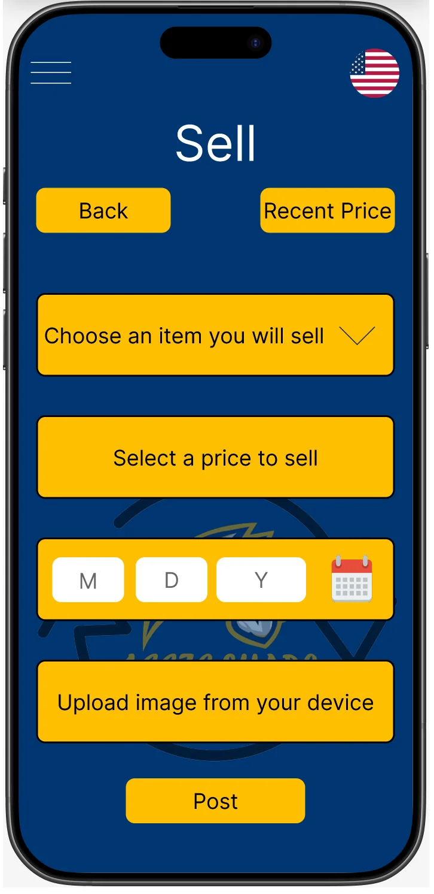
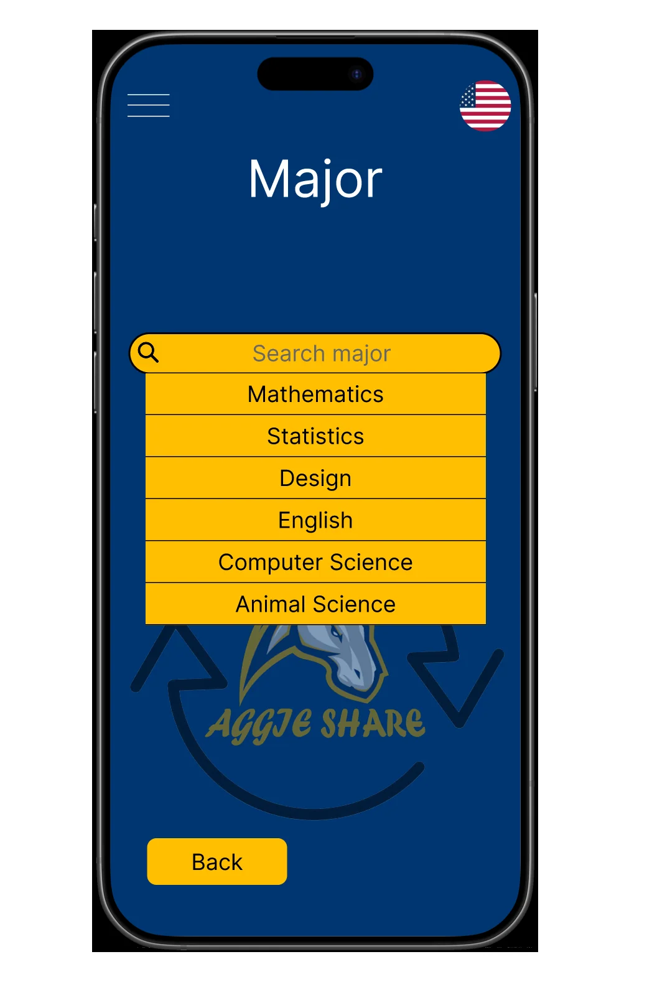
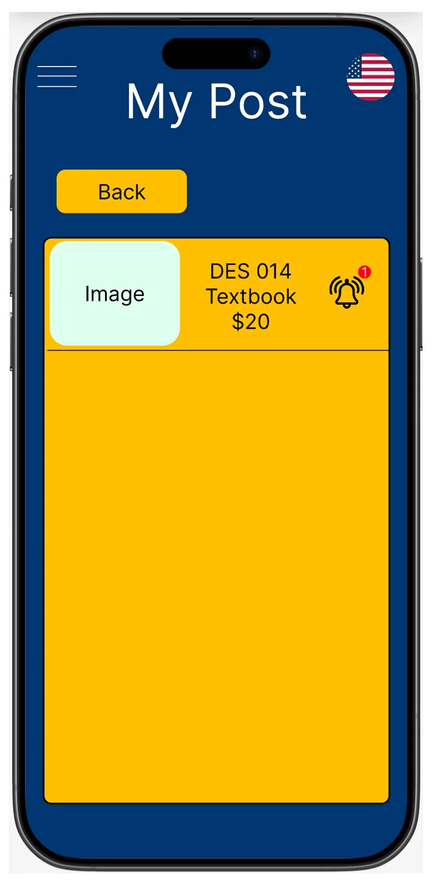
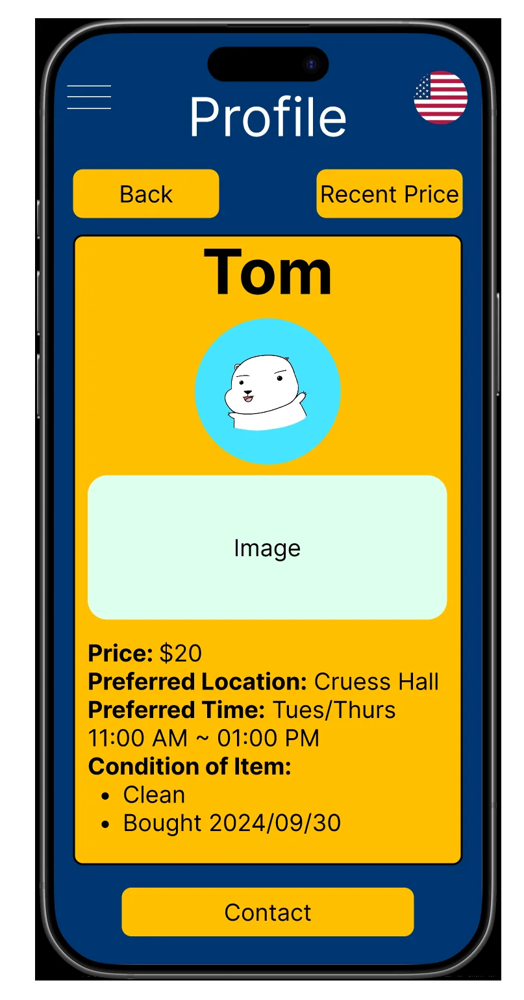
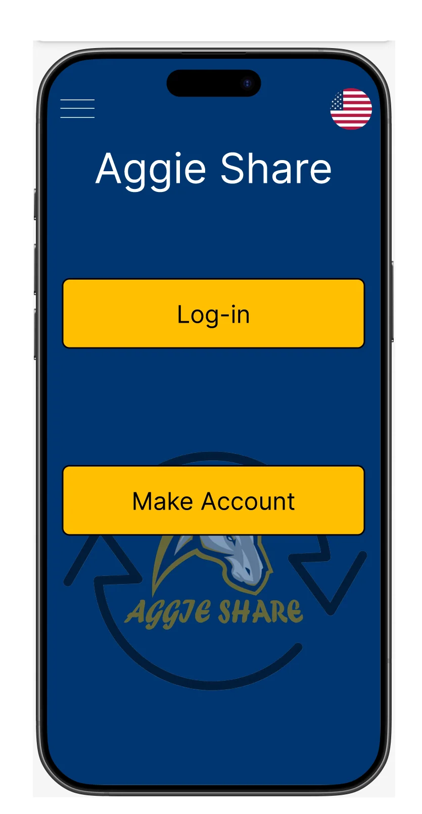

DES 112 · UI/UX DESIGN · COURSEWORK
Aggie Share — Student Marketplace
An affordable resource-sharing mobile app concept for UC Davis students, from early interviews to Figma screens.

01 / PROBLEM
Why build Aggie Share?
Textbooks, art supplies and other course materials can be costly. The project explored a campus-oriented way for students to list, find and exchange resources rather than letting unused items go to waste.
02 / RESEARCH
Start with students
The design brief records interviews with three UC Davis international students. Topics included textbook spending, hard-to-find second-hand options, and interest in sharing. All three expressed interest in a book-sharing app; reminders and trust signals were suggested. These are exploratory interviews, not a representative study.
03 / DESIGN
A campus marketplace flow
The final Figma screens show a home search, buying and selling forms, major-based browsing, chat, reminders, personal listings and a profile. The concept uses UC Davis-inspired blue and gold to create a recognizable identity.
04 / SELECTED INTERFACE SCREENS
From the original Figma exports








05 / SCOPE
A designed prototype, not a launched service
The uploaded files document a proposal, exploratory research, and interface screens. They do not establish a live marketplace, completed transactions, usability test outcomes or measured impact.
ORIGINAL COURSE MATERIALS
Explore the source
View the submitted research and proposal alongside the Figma design link provided in the archive.